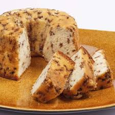

Bolo Formigueiro

Ingredientes
- 1 xícara (de chá) de manteiga
- 1 xícara (de chá) de açúcar
- 4 ovos (se for muito grande, use 3)
- 200 ml de leite
- 2 e 1/2 xícara (de chá) de farinha de trigo
- 1 pacote de coco ralado (50 g)
- 1 pacote de granulado de chocolate (50 g)
- 1 colher (de sopa) de fermento de bolo
Modo de Preparo
- Coloque a manteiga e o açúcar na tigela da batedeira.
- Bata bem até ficar um creme esbranquiçado.
- Acrescente os ovos um a um, continuando a bater.
- Junte o leite e a farinha de trigo alternadamente.
- Bata na velocidade baixa da batedeira só até formar uma massa.
- Retire da batedeira e acrescente o coco e o granulado.
- Misture tudo muito bem. Acrescente o fermento e mexa delicadamente
- Coloque a massa em uma forma untada com manteiga e polvilhada com farinha de trigo.
Leve ao forno preaquecido (200 graus)
- Depois de 35 minutos, espete um palito para ver se ele sai limpo, se sair já está bom. Deixe ficar morno, quase frio para desenformar.